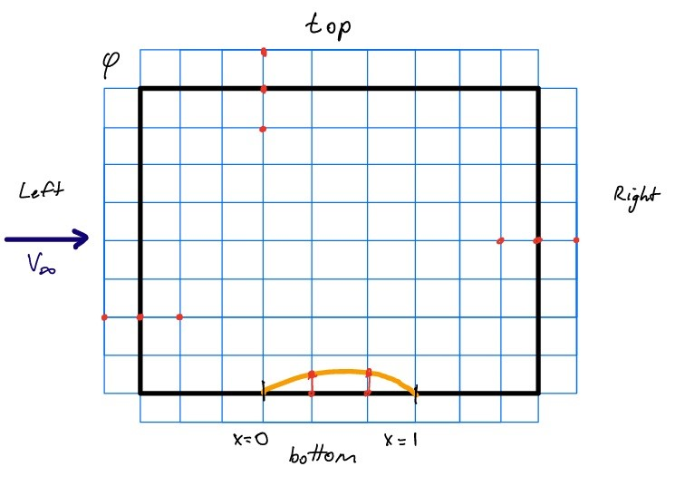

Introduction
Main objective of this lab was to compare different approximation methods to solve for transonic flow. These methods involved TSDE, Prandtl-Glauert and incompressible assumptions. We were provided data for TSDE and incompressible data. To solve using the Prandtl-Glauert method we used the jacobi method to iterate the velocities at different points on the grid. To ensure that the velocities values converged we chose our max error to be below 1*10^-6. To fully define the grid we used boundary conditions. For left and right and top edges we just assumed that the velocities are the same as the velocities two points from it. We can assume this since the flow is undisturbed at those points. For the bottom part we can only make this assumption when the flow is not in the airfoil. When the flow is in the airfoil we have to use φ 𝑖,3 − 2∆𝑧𝑧'. Now that the flow is fully defined inside the grid we can do data analysis and work out the Cp values around the airfoil. The result we got shows that for M = 0.3 where the flow is subsonic all 3 methods have very similar output. But when we reach the transonic domain M = 0.85 the Cp values start to differ. This is because at 0.85 there is a shock wave located on the airfoil surface. Cd values are very low, almost zero for M = 0.3 because the airfoil is at zero degrees angle of attack and this can be seen from all the methods. For M = 0.85 the drag is almost zero until the point where a shock wave occurs in the airfoil. Then we have some significant Cd values. This can only be seen from TSDE since that is the only method that accounts for shock waves. In conclusion the TSDE equation is the closest to real life flow. This is because it accounts for the shock waves. Prandlt-Glauert overshoots the Cp values but is still reliable to just see a rough estimate of the flow. Incompressible predicts the worst at high or transonic speeds.
Figure 1 (shows CFD grid setup)
From figure 1 we can see how the grid is setup whil doing CFD. Also how the boundary conditions are used to fully define the grid. Simulating the subsonic small disturbance equation is a crucial endeavor in aerodynamics, offering deep insights into the behavior of airflow around airfoils at subsonic speeds. By solving this equation, engineers gain a comprehensive understanding of lift generation, flow patterns, and the distribution of pressure around airfoils. This understanding facilitates the prediction of aerodynamic forces such as lift and drag, essential for designing efficient and stable aircraft. Moreover, simulations enable the optimization of airfoil shapes to achieve desired performance metrics, while also serving as a means to validate experimental data and explore various design trade-offs. As both an educational tool and a platform for advanced research, simulations of the subsonic small disturbance equation play a pivotal role in advancing our understanding of aerodynamics and driving innovation in aircraft design

Figure 2 (shows CFD code used in MATLAB)
From figure 2 we can see that the first part of the code fully defines the grid point in MATLAB. Then after the grid is fully define I used Jacobi method to work out the velocity at each pont in the grid. Then using those velocity values I worked out the Cd and Cp values.